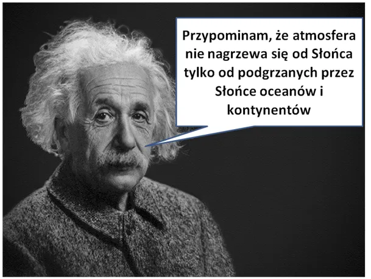
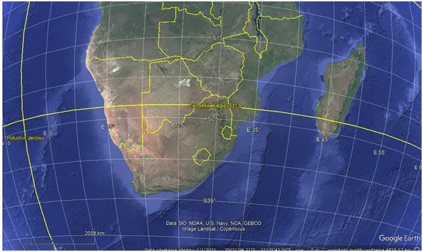
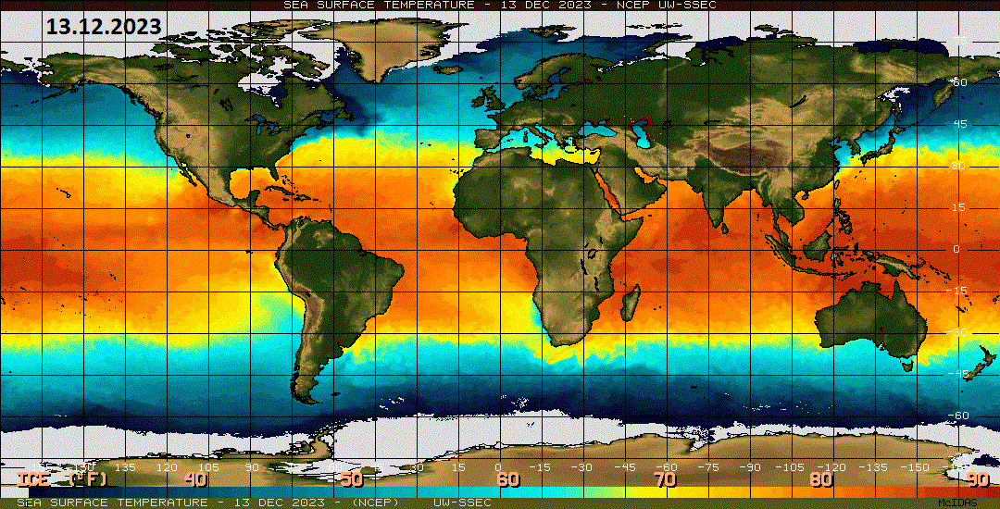
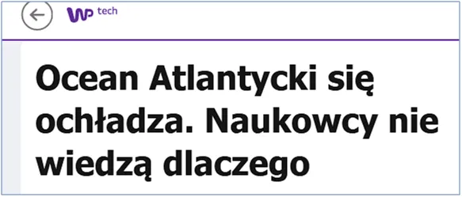

Jest cieplej bo było zimniej.
Mamy połowę grudnia i za tydzień Słońce będzie w zenicie (pionowo) nad południowym zwrotnikiem między Madagaskarem i Afryką.

Od tego momentu pozorny ruch bujania się Ziemi spowoduje, że w każdej sekundzie Słońce będzie świecić nad Ziemią pionowo coraz bardziej na północ, a 20 marca przekroczy równik. Mimo, że to już w grudniu bilans energii dostarczanej ze Słońca na Ziemię zacznie przesuwać się na północ, to z powodu bezwładności termicznej oceanów zmianę na plus poczujemy za ok. 40-50 dni, czyli na przełomie stycznia i lutego. Dodatkowo do tego czasu kąt padania promieni słonecznych jest za mały, a dzień za krótki, aby mogła nastąpić wiosna.
Przed nami jeszcze grudniowe szarobure dni, ale wygląda na to, że tej zimy będziemy mieli wiele słonecznych chwil z powodu ciągle stygnącego Atlantyku, który wysyła nad Europę mniej chmur niż przed laty.

Na animacji widać bardzo zimny Pacyfik na równiku, co będzie skutkowało dalszym spadkiem energii cyklonów w przyszłym sezonie. To one są miarą termiki oceanów w ich całej potędze. Studiuje od kilku tygodni pomiary satelitarne i wiem, jak mało mogą być przydatne, bo nie wiemy, co się dzieje kilka metrów pod powierzchnią oceanów i głębiej. Oczywiście są te parametry znane armii USA, która penetruje głębiny swą podwodną flotą, ale nie są dostępne nam. Jestem przekonany, że coraz więcej publikacji w nowej narracji klimatycznej to wynik tej wiedzy. Artykuły typu "Atlantyk się ochładza, nikt nie wie dlaczego" są zapowiedzią coraz to nowych "rewelacji".

Czekam na moment, gdy to nasi "geniusze" zauważą, że Ziemia czerpie energię cieplną za pośrednictwem zimnego światła ze Słońca. Wikipedia jest zalana absurdalnymi artykułami o tym, jak atmosfera podgrzewa ocean, mimo, że jest dokładnie odwrotnie. Mantra: Światło nie nagrzewa atmosfery tylko Ziemię, a ta wysyła podczerwień pod ogrzewając atmosferę. Potem ta energia, dalej w postaci podczerwieni, dosłownie ogrzewa cały Kosmos, co z naszego punktu widzenia oznacza, że ją tracimy bezpowrotnie.

Ziemia się nagrzewa, gdy absorbuje więcej energii niż oddaje, a wychładza się, gdy jest odwrotnie. Kluczem są chmury i niewidzialna para wodna. Chmury w okolicach równika zamykają dopływ energii i mamy ochładzanie. Chłodny ocean produkuje mniej chmur i wracamy do fazy ogrzewania i parowania. Para wodna daje ponad 90 % efektu cieplarnianego, maksymalnie CO2 kilka procent. Wzrost wilgotności oznacza zwiększony efekt cieplarniany, dużo chmur z ciepłych oceanów i wracamy do fazy chłodzenia. Ten genialny system samoregulacji jest podatny na wpływy kosmiczne, dlatego podczas naszej podróży przez Galaktykę przechodzimy co setki tysięcy lat różne zlodowacenia i okresy gorące. Napisano o tym tysiące stron naukowych książek, dziś "prawda" pochodzi z TV i mamy problem.
Paweł Klimczewski